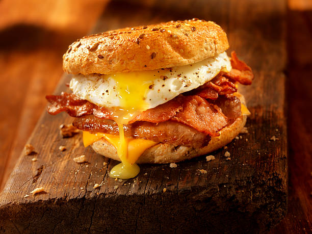

Bacon Egg & Cheese

Bacon Egg and cheese on a Roll is a staple breakfast food no matter where
you are tragveling across the U.S.
Additionally it only requires three main ingrediants and relatively
easy to make
Ingredients
- Buns
- Bacon
- Eggs
- Cheese
- oil
Steps
- Place your non stick pan onto a stove and set the heat on medium
- After about 1 minute or so of letting your pan heat up, pour a bit of oil in it
- When the oil starts bubbling a bit place the desired amount of bacon strips into the pan
- While the bacon is cooking make sure to flip it so that it gets cooked well on both sides
- When the bacon is close to being done quickly crack an egg into the pan so the bacon and egg finish cooking together
- Once the bacon and eggs are cooked place then onto some buns and add your desired type of cheese
- The final step is to enjoy eating your creation!